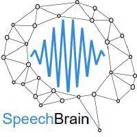

<div class="content">
    <div class="row">
        <div class="col-12 text-center" style="background-color: black;">
          
        </div>
        <div class="col-12">
            <div class=" card card-chart">
                <div class=" card-header">
                  <div class=" row">
                    <div class=" col-sm-12 text-center">
                      <h5 class=" card-category">Librosa Library</h5>
                      <h2 class=" card-title">Audio Preprocessing & Features Extraction</h2>
                      
                    </div>
                  </div>
                </div>
                <div  class=" card-body" id="demo">
                  <div itemprop="articleBody">
            
                    <div class="section" id="librosa">
                  <h1>librosa<a class="headerlink" href="#librosa" title="Permalink to this headline">¶</a></h1>
                  <p><a class="reference internal" href="core.html#module-librosa" title="librosa"><code class="xref py py-obj docutils literal notranslate"><span class="pre">librosa</span></code></a> is a python package for music and audio analysis.  It provides the building
                  blocks necessary to create music information retrieval systems.</p>
                  <p>For a quick introduction to using librosa, please refer to the <a class="reference internal" href="tutorial.html"><span class="doc">Tutorial</span></a>.
                  For a more advanced introduction which describes the package design principles, please refer to the
                  <a class="reference external" href="http://conference.scipy.org/proceedings/scipy2015/pdfs/brian_mcfee.pdf">librosa paper</a> at
                  <a class="reference external" href="http://scipy2015.scipy.org">SciPy 2015</a>.</p>
                
                  </div>
                  
                  
                             </div>
                  <div style="overflow:auto; height:50vh">
                    <table class="table" >
                      <thead>
                        <tr>
                          <th class="text-center">#</th>
                          <th>library</th>
                          <th>preprocess</th>
                          <th>description</th>
                        </tr>
                      </thead>
                      <tbody *ngFor="let preprocessStep of this.PreprocessingSteps; let i = index">
                        <tr>
                          <td class="text-center">{{i}}</td>
                          <td style="width: 5%;">{{ preprocessStep.library }} </td>
                          <td style="width: 20%;">{{ preprocessStep.preprocess }} </td>
                          <td >{{ preprocessStep.description }} </td>                    
                        </tr>
                        
                      </tbody>
                    </table>
                  </div>
                  
                </div>
            </div>
        </div>

        <div class="col-12">
            <div class=" card card-chart">
                <div class=" card-header">
                  <div class=" row">
                    
                    <div class=" col-sm-12 text-center">
                      <a href="https://speechbrain.github.io/">
                        <h5 class=" card-category">Speechbrain</h5>
                        <h2 class=" card-title">Deep Learning Speech Analysis</h2>
                        
                      </a>
                    </div>
                  </div>
                </div>
                <div  class=" card-body" id="demo">

                  <div class="container">
                    <div class="main_title">
                      <h2>Key Features</h2>
                      <p>SpeechBrain is an open-source and all-in-one conversational AI toolkit.
                        It is designed to be simple, extremely flexible, and user-friendly. Competitive or state-of-the-art performance is obtained in various domains.</p>
                    </div>
                    <div class="work_inner row">
                      <div class="col-lg-4">
                        <div class="work_item">
                          <i class="lnr lnr-mic"></i>
                          <a href="#"><h4>Speech Recognition</h4></a>
                          <p>SpeechBrain supports state-of-the-art methods for end-to-end
                            speech recognition, including models based on CTC, CTC+attention, transducers, transformers,
                            and neural language models relying on recurrent neural networks and transformers.</p>
                        </div>
                      </div>
                      <div class="col-lg-4">
                        <div class="work_item">
                          <i class="lnr lnr-user"></i>
                          <a href="#"><h4>Speaker Recognition</h4></a>
                          <p>Speaker recognition is already deployed in a wide variety of realistic applications.
                            SpeechBrain provides different models for speaker recognition, including X-vector, ECAPA-TDNN, PLDA, contrastive learning
                           </p>
                        </div>
                      </div>
                      <div class="col-lg-4">
                        <div class="work_item">
                          <i class="lnr lnr-magic-wand"></i>
                          <a href="#"><h4>Speech Enhancement</h4></a>
                          <p>Spectral masking, spectral mapping, and time-domain enhancement are different methods already available within SpeechBrain.
                            Separation methods such as Conv-TasNet, DualPath RNN, and SepFormer are implemented as well.</p>
                        </div>
                      </div>
                      <div class="col-lg-4">
                        <div class="work_item">
                          <i class="lnr lnr-cog"></i>
                          <a href="#"><h4>Speech Processing</h4></a>
                          <p>SpeechBrain provides efficient and GPU-friendly speech augmentation pipelines and acoustic features extraction, normalisation
                            that can be used on-the-fly during your experiment.
                          </p>
                        </div>
                      </div>
                      <div class="col-lg-4">
                        <div class="work_item">
                          <i class="lnr lnr-mic"></i>
                          <a href="#"><h4>Multi Microphone Processing</h4></a>
                          <p>Combining multiple microphones is a powerful approach to achieve robustness in adverse acoustic environments.
                            SpeechBrain provides various techniques for beamforming (e.g, delay-and-sum, MVDR, and GeV) and speaker localization.
        
                        </p>
                        </div>
                      </div>
                      <div class="col-lg-4">
                        <div class="work_item">
                          <i class="lnr lnr-smile"></i>
                          <a href="#"><h4>Research &amp; Development</h4></a>
                          <p>SpeechBrain is designed to speed-up research and development of speech technologies.
                            It is modular, flexible, easy-to-customize, and contains several recipes for popular datasets. Documentation and tutorials are here to
                            help newcomers using SpeechBrain.</p>
                        </div>
                      </div>
                      <div class="col-lg-4" style="margin:0 auto">
                        <div class="work_item">
                          <i></i>
                          <a href="#"><h4>HuggingFace!</h4></a>
                          <p>SpeechBrain provides multiple pre-trained models that can
                            easily be deployed with nicely designed interfaces.
                            Transcribing, verifying speakers, enhancing speech, separating sources have never been that easy! </p>
                        </div>
                      </div>
                    </div>
                  </div>

                  <div style="overflow:auto; height:50vh">
                    <table class="table">
                      <thead>
                        <tr>
                          <th class="text-center">#</th>
                          <th>Task</th>
                          <th>System</th>
                          <th>Dataset</th>
                          <th>Performance</th>
                        </tr>
                      </thead>
                      <tbody *ngFor="let AudioAnalysisStep of this.AudioAnalysisSteps; let i = index">
                        <tr>
                          <td class="text-center">{{i}}</td>
                          <td>{{ AudioAnalysisStep.task }} </td>
                          <td>{{ AudioAnalysisStep.system }} </td>
                          <td>{{ AudioAnalysisStep.dataset }} </td>
                          <td>{{ AudioAnalysisStep.performance }} </td>
                        </tr>
                      </tbody>
                    </table>
                  </div>
                  
                </div>
            </div>
        </div>
    </div>
</div>